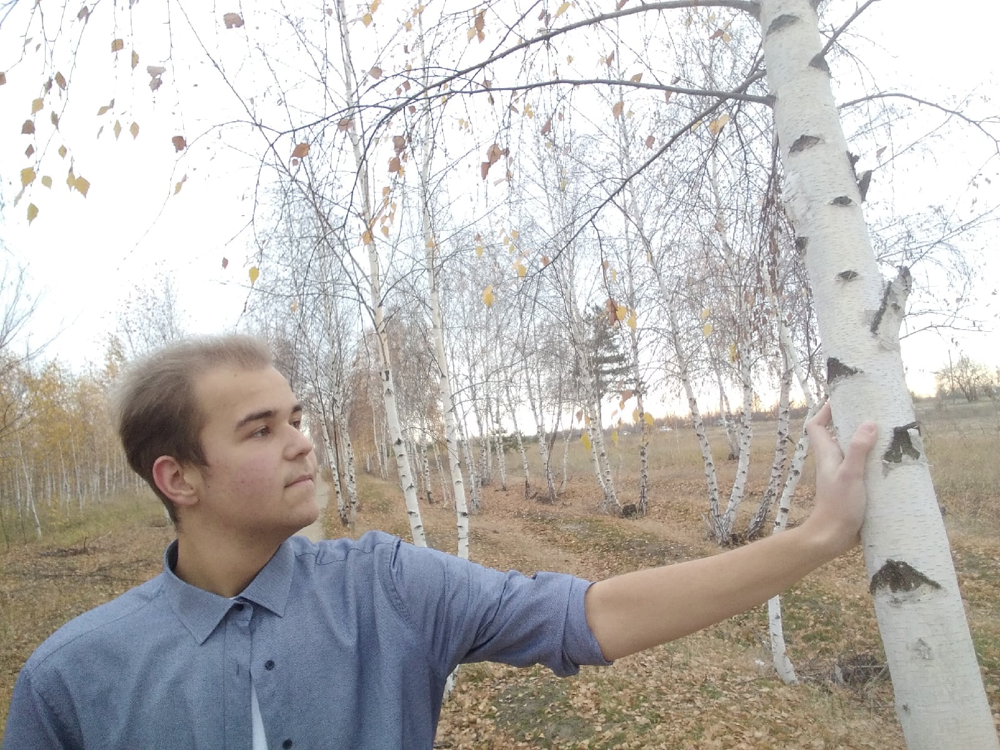

Дима Сиднев
Ого, целый сайт про меня
Обо мне
Я 18 летний студент, который пока что толком ничего серьёзного не добился, так что, походу мне особо нечего писать в первом абзаце. Дальше я чутка расскажу о себе, а-ля, микро автобиография.
Родился я Воронеже, тут же и живу, да и не выхожу от сюда. Если ты местный, то после слова машмет твоё лицо должно наполниться страхом, унынием, отчаянием (если ты живёшь здесь). Так к чему это я про машмет, а, я сам отсюда!
Учился в 97 школе, в принципе, ничего особенного. Но школа для меня это тёмный век, я тогда был ебланом и только в компьютерные игры играл, мало общался, никак не пытался сделать себя лучше. Ещё я ещё 120 кг весил и боялся женщин.
После сдачи ОГЭ я решил не идти в 11 класс, так как понял что хотелось бы начать всё с чистого листа. Так я и оказался там, где я и сейчас, в техникуме. Первый год бытия студента стал поворотным, ввиду того, что окружение поменялось, захотел измениться и я! Сначала я смотрел видео по пересказу книг, чутка позже начал их активно читать, до сих пор не останавливаюсь.
На втором курсе до меня дошло, что мозги качать это круто, но быть жировиком так себе. Мне повезло, ведь тогда активно карантинили осенью и у меня была туева хуча свободного времени. Ни с того ни с сего мне понравилось.... ходить? Да, на своих двоих, на дальние дистанции. И так я отходил довольно большую часть своего жира (у меня даже мазоли на ногах не успевали заживать).
А на третем годе обучения (пока говорю за первую половину, вторую ещё предстоит прожить), я увяз в программировании, делая себе сайты (эй, нет, я не самовлюблённый!) и капаясь в целом в веб разработке.
В будущем планирую с юриста повернуть на программиста (после армии), сделать из этого сайта-визитки полноценный блог (надеюсь успею до), накачаться, побриться налысо (ЭТОТ ПУНКТ ОБЯЗАТЕЛЕН), написать книгу. Было бы ещё круто попутно стать пиратом, ну или феей.
Ух, ну и человек! Ладно, я и так тут палку драмы перегнул, хватит, а то ещё не дай бог кому-то понравлюсь. А если так и получилось (понравился всмысле), то внизу всегда есть контактные данные и прекрасная форма.
Контакт
dmithry.sidnev.98@mail.ru
- vk.com/dmitry_the_great